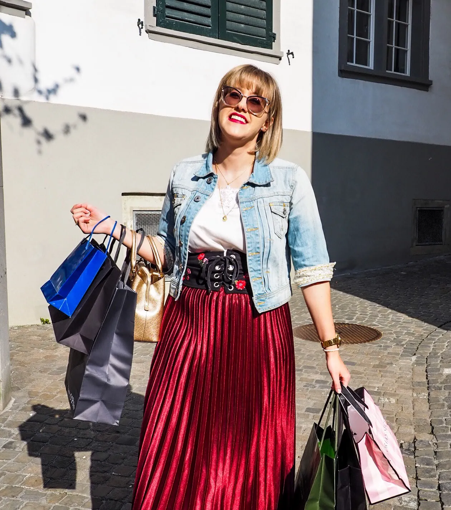
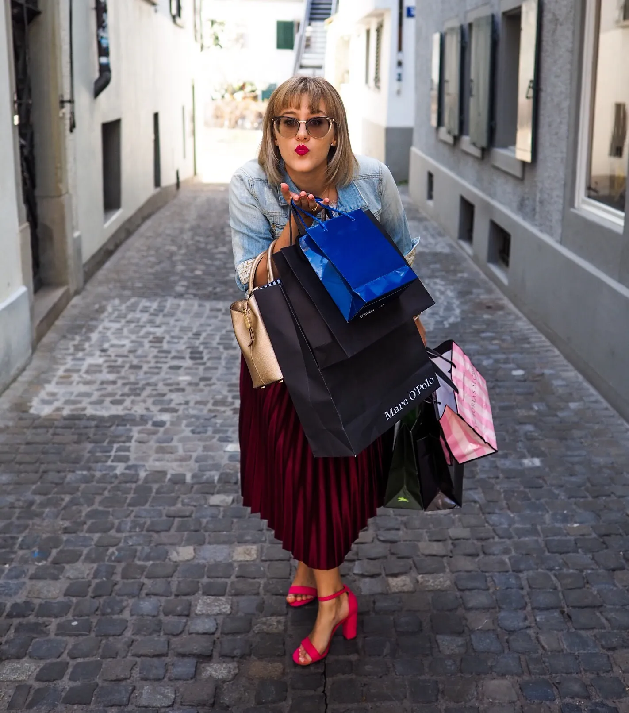

Shoppen sollte vom Arzt verschrieben werden –
Phänomen Kaufsucht
Phänomen Kaufsucht
«Ich geh mal in die Stadt und kauf mir etwas gegen Halsschmerzen – Schuhe oder so»
ist ein Satz, der durchaus zutreffen könnte. Bei einem Shopaholic nämlich würde der
Kauf von Schuhen solch ein Glücksgefühl hervorrufen, dass er/sie die Halsschmerzen glatt
vergisst. Ich persönlich würde sagen: «Ist das nicht einfach herrlich!?», ein anderer würde
mich allerdings anschauen und denken: «Die spinnt doch, Halsschmerztabletten sind doch viel
günstiger, als ein paar Schuhe.». Recht hätte «der andere», doch meine Meinung kommt auch nur
deshalb aus meinem Mund geschossen, weil ich auch davon betroffen bin – ich bin ein Shopaholic,
ich bin kaufsüchtig!
Klingt jetzt wie ein Outing? Ist es vielleicht auch, ein Outing, was aber viele von euch schon
wussten. Doch, was ich weiss ist, dass auch du von dieser Sucht «befallen» sein könntest. Wetten?
In diesem Artikel werde ich dir nämlich zeigen, was Kaufsucht genau ist, was sie bewirkt und
wie du ganz einfach feststellen kannst, dass auch du auf gutem Weg bist, ein Shopaholic zu werden.
Ein Weg, den du unbedingt stoppen und nicht gehen solltest!

Mein Kaufsucht-Outing
Meine sogenannte Kaufsucht machte sich schon lange bemerkbar, so richtig bewusst wurde es mir
aber eines schönen Sonntagnachmittags, als ich mein Ankleidezimmer auf dem Kopf stellte und
ausmistete, um all meine schönen Dinge, von denen ich mich nur schwer trennen kann, am Fashion
Flohmarkt am 19. Mai in Affoltern ZH verkaufen zu können. Gut eine Stunde später nämlich sass
ich in Mitten von riesigen Kleiderberge und musste kopfschüttelnd zugeben: Natascha, das grenzt
stark an Kaufsucht! Wer hat denn nur so viele Kleider!?
Sage und schreibe knappe 50 Paar Hosen zählte ich, die ich verkaufen möchte (und da würden
sicherlich noch einige mehr dazu kommen, wenn ich mich davon trennen könnte). In meinem
Ankleidezimmer befinden sich gute 100 Paar Schuhe. Ich füllte 2 Umzugskartons mit T-Shirts, die
zum Verkaufen sind. Muss ich weiter aufzählen? Ich denke nicht… und darum ziehe ich jetzt einen
Schlussstrich unter diese Shoppingsucht!
Diagnose: “Kaufsucht!”
Wie es so üblich ist, recherchiert man auch bei einem nur «leichten Gebrechen» im Internet,
was es denn sein könnte, bevor man zum Arzt rennt. Da ich eine Sucht als definitives Leiden
betiteln würde, zogen meine Recherchen auch mich in das Word Wide Web und ich stiess auf
folgende 9 Fragen:
- Sie geben Geld für Dinge aus, die über Ihrem Budget liegen.
- Sie kaufen mehr als Sie brauchen.
- Sie verheimlichen Käufe vor Familie und Freunden.
- Sie bemerken Schuldgefühle und Scham nach einer ausgiebigen Shopping-Tour und retournieren oft Dinge aus diesem Grund.
- Sie entfremden sich von zwischenmenschlichen Beziehungen und das Shoppen an sich wird zur Hauptbeschäftigung.
- Sie präferieren den Gebrauch der Kreditkarte und bezahlen weniger gern mit Bargeld.
- Sie kaufen, um Gefühle wie Wut, Traurigkeit oder Einsamkeit zu kompensieren.
- Sie diskutieren regelmässig mit anderen über Ihre Shopping-Angewohnheiten.
- Sie legen unbezahlte Rechnungen zurück und nehmen sich Kredite, um mehr Shoppen zu können.
Varianten von Kaufsucht
Meine Internetrecherchen haben nämlich nicht nur diese 9 Fragen ausgespuckt, sondern auch
die verschiedenen Varianten von Kaufsucht. Alle hier aufzuzählen, würde den Rahmen wohl etwas
sprengen, doch die 3 gängigsten werde ich dir nicht vorenthalten:

- Schnäppchenjäger, die sich Dinge kaufen, weil sie im Angebot sind und nicht, weil sie gebraucht werden.
- Sammler, die sich nicht vollständig fühlen, bis sie eine bestimmte Sache in allen Farben und Ausführungen gekauft haben.
- Zwanghafte Shopaholics, die erst dann mit dem Einkauf stoppen, wenn Sie sich emotional befreit fühlen.
Es folgt: die “Anti-Shopaholic-Kur”
Was ich aber aus diesem Artikel für mich selbst sogar mitnehmen kann ist, dass die
Erkenntnis zumindest da ist, an dem Phänomen Kaufsucht «erkrankt» zu sein. Ist ja zumindest
schon mal ein Anfang, oder? Bestimmt werde ich, sobald mein shoppingwütiges Engelchen auf meiner
linken Schulter es endlich zulassen würde, dir über meine «Anti-Shopaholic-Kur» berichten.
Ein bisschen Anstecken muss ich dich aber noch, falls du auch von der Variante
«Schnäppchenjäger-Kaufsucht» befallen bist: am 19. Mai 2019 findet in Affoltern ZH ein Fashion
Flohmarkt statt. Besuche mich und die anderen Verkäuferinnen doch an dem Flohmarkt und tobe dich
aus. Alle Informationen zum Fashion Flohmarkt findest du hier.
Deine Shopaholic Natascha

Deine Shopaholic Natascha
PS: von Shopaholic zu Shopaholic – meine Shoppingtipps
| Brand | Kategorie | Homepage | Beschreibung | Lieblingsteil |
|---|---|---|---|---|
| Zalando Lounge | Kleidung | www.zalando-lounge.ch | Alles für Fashion-Schnäppchenjäger | Rosa Handtasche |
| Asos | Kleidung | www.asos.de | Für Modegurus mit speziellem Geschmack | Glitzerkleid |
| Storytellerdresses | Kleidung | www.storytellerdresses.com | Abendmode, die man mieten kann | Shapewear |
| Glambou | Schmuck | www.glambou.com | Schmuck für den Alltag | Ohrenringe |
| Boutique Altstadt | Kleidung | www.boutiquealtstadt.ch | Modeboutique im Herzen von Rapperswil | Schal |